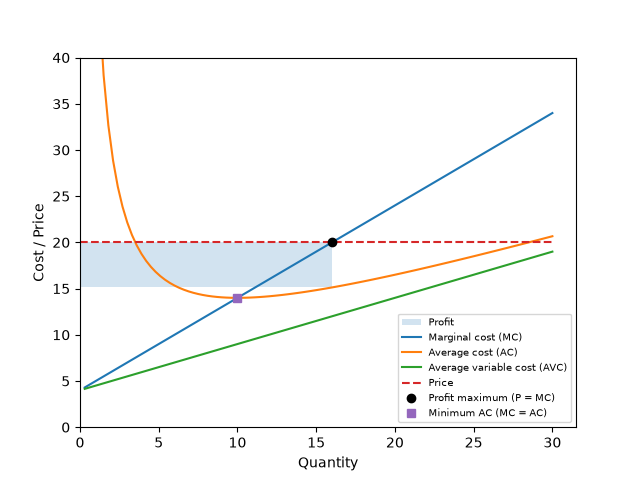
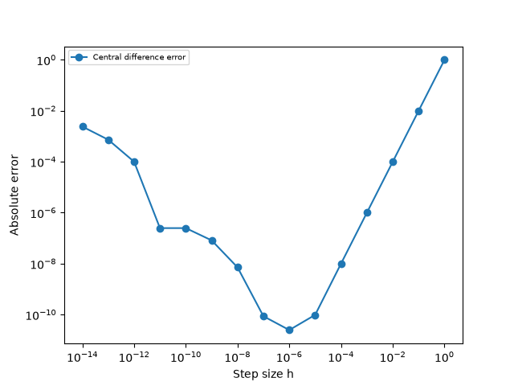

第 5 章: 1 変数の微分と利潤最大化¶
5.1 この章の地図¶
第 2 章では、独占企業の利潤を 2 次関数で表し、放物線の頂点で最大を求めました。費用が 3 次関数になると、頂点の公式は使えません。どんな形の関数でも使える道具が、この章の微分です。
微分は、関数の傾きを求める操作です。山の頂上では、傾きが 0 になります。傾きが 0 の点を探せば、最大・最小の候補が見つかります。経済学では、費用の傾きが限界費用です。価格を所与とする企業は、価格 ＝ 限界費用となる数量で、利潤を最大にします。

| 項目 | 内容 |
|---|---|
| 経済学の題材 | 費用関数（固定費用・可変費用）、限界費用・平均費用・平均可変費用、利潤最大化（P = MC）、操業停止点 |
| 数学 | 微分（傾きの極限）、冪・定数倍・和の公式、数値微分（中心差分）と誤差、増減、極値、2 階の導関数、凹関数・凸関数（発展） |
| 使う Python の機能 | dataclass のメソッド（__call__・__add__）、関数を引数に渡す、max の default、テスト（pytest） |
| 新しく導入するライブラリ | なし |
| 完成形 | Polynomial、numerical_derivative、difference_quotient_errors、stationary_points、classify_stationary_point、is_concave_on、fixed_cost、variable_cost、average_cost、average_variable_cost、marginal_cost、competitive_profit、profit_maximizing_quantity、minimum_average_cost、minimum_average_variable_cost |
| ファイル | 実装: lib/chapter05/derivative.py、lib/chapter05/cost.py、lib/chapter05/plot.py（図）／テスト: test/chapter05/test_derivative.py、test/chapter05/test_cost.py、test/chapter05/test_plot.py |
| データ | なし（手計算できる小さな例だけ） |
数学の式とコードの対応¶
| 経済学・数学 | 式 | コード |
|---|---|---|
| 多項式 | f(x) = c₀ + c₁x + c₂x² + c₃x³ | Polynomial((c0, c1, c2, c3)) |
| 冪の公式（和・定数倍） | (x^n)' = n·x^(n−1) | poly.derivative() |
| 数値微分（中心差分） | (f(x + h) − f(x − h)) ÷ (2h) | numerical_derivative(func, x, step) |
| 極値の候補 | f'(x) = 0 | stationary_points(poly) |
| 極大・極小の判定 | f''(x) < 0 なら極大、> 0 なら極小 | classify_stationary_point(poly, x) |
| 限界費用 | MC = C'(q) | marginal_cost(cost, q) |
| 平均費用・平均可変費用 | AC = C(q) ÷ q、AVC = (C(q) − C(0)) ÷ q | average_cost(cost, q)、average_variable_cost(cost, q) |
| 利潤最大化 | P = MC（MC が右上がり） | profit_maximizing_quantity(price, cost) |
記号について: 多項式の係数は、次数の低い順に並べます。C(q) = q² + 10q + 100 は
Polynomial((100, 10, 1))です（定数項が先頭）。第 2 章のquadratic_roots(a, b, c)は、a·x² + b·x + c と次数の高い順なので、向きが逆です。
前提とする章¶
| できること | 場所 |
|---|---|
2 次関数の頂点・解の公式・格子探索、関数を引数に渡す（lambda）、dataclass |
この連載の第 2 章 |
費用曲線と供給の経済学としての意味は、ミクロ経済学のためのプログラミング（初級）の第 5 章 と 第 7 章 で扱います。この章は、そこで使う数学（微分と最適化）を、関数とテストで確かめます。
5.2 準備¶
cd apps/math-for-economics-programming/python
uv run pytest test/chapter05
47 passed
自分でコードを書くときは、practice/chapter05/ に、完成形と同じ名前のファイル（derivative.py・cost.py・plot.py・test_derivative.py・test_cost.py・test_plot.py）を作ります。図を後回しにするなら、plot.py と test_plot.py は要らず、テストは 44 件になります。
- テスト・
plot.py・check スクリプトの import を、from practice.chapter05...に書き換えます（書き換えないと、完成形を動かします） - 第 2 章の関数（
quadratic_roots・parabola_vertex・argmax_on_grid）は、自分で写したpractice.chapter02から import します。写していなければ、lib.chapter02のままでかまいません - テストの import の一覧は、完成形の全関数です。まだ書いていない関数を import すると、
ImportErrorになります。関数を 1 つ書くたびに、名前を import に足してください
「予想の答え合わせ」のスクリプトは、practice/chapter05/check.py に保存し、uv run python -m practice.chapter05.check で実行します。
5.3 予想する¶
次の 4 つの問いに、紙で、手計算で答えてください。答えは、この節には書いてありません。「プログラミング」の節の「予想の答え合わせ」で確かめます。
- f(x) = x³ − 3x の導関数は、何ですか。f は、どの範囲で減少しますか。極大・極小になる x と、そのときの f の値は、いくつですか
- 費用が C(q) = q² + 10q + 100 の企業が、価格 50 で売ります。限界費用は、どんな式ですか。利潤を最大にする数量と、そのときの利潤は、いくつですか
- 同じ費用で、平均費用が最小になる数量と、その平均費用は、いくつですか。そこでの限界費用は、いくつですか。価格が 25 に下がると、この企業は生産を続けますか（利潤は、正ですか）
- x³ の x = 1 での傾き（正しくは 3）を、刻み幅 h = 0.1 の中心差分で近似すると、いくつになりますか。h を 10⁻¹³ まで小さくすると、h = 10⁻⁵ のときより、正確になりますか
5.4 微分と利潤最大化の考え方¶
微分とは¶
関数 f の、x から x + h までの平均の傾きは、(f(x + h) − f(x)) ÷ h です。h を 0 に近づけたときの値を、x での微分係数と言い、f'(x) と書きます。x ごとの f'(x) を並べた関数が、導関数です。
f'(x) = lim_{h→0} (f(x + h) − f(x)) ÷ h
グラフでは、f'(x) は、x での接線の傾きです。f'(x) > 0 なら、f は x の近くで増加し、f'(x) < 0 なら減少します。
微分の公式¶
多項式の導関数は、3 つの公式で求まります。
| 公式 | 式 | 例 |
|---|---|---|
| 冪の公式 | (x^n)' = n·x^(n−1)（定数の微分は 0） | (x³)' = 3x² |
| 定数倍 | (k·f)' = k·f' | (5x²)' = 10x |
| 和 | (f + g)' = f' + g' | (x² + 4x + 7)' = 2x + 4 |
| 積 | (f·g)' = f'·g + f·g' | (x²·eˣ)' = 2x·eˣ + x²·eˣ |
| 商 | (f ÷ g)' = (f'·g − f·g') ÷ g² | (1 ÷ x)' = −1 ÷ x² |
| 合成 | (f(g(x)))' = f'(g(x))·g'(x) | ((x² + 1)³)' = 3(x² + 1)²·2x |
係数を次数の低い順に並べると、導関数は、「各係数に次数を掛けて、1 つ左にずらす」操作です。(7, 4, 1) は (4, 2) になります。積・商・合成の公式は、多項式以外（eˣ や分数の関数）にも使います（第 6 章の弾力性で使います）。この章のコードは多項式の公式だけを実装し、積・商・合成は、数値微分との一致をテストで確かめます。
数値微分と刻み幅¶
公式を使わずに、傾きを数値で求めることもできます。h を小さな正の数にして、x の左右の値の差を使います（中心差分）。
f'(x) ≈ (f(x + h) − f(x − h)) ÷ (2h)
h を小さくするほど正確、とは限りません。h が大きいと、曲線を直線で近似した打ち切りの誤差が出ます。h が小さすぎると、ほぼ等しい 2 つの数の引き算で、浮動小数点の丸めの誤差が大きくなります（桁落ち）。誤差が最も小さい h は、その間にあります。
増減と極値¶
f'(x) = 0 の点（停留点）は、極大・極小の候補です。2 階の導関数 f''（導関数の導関数）の符号で、どちらかを判定します。
| f'(x) | f''(x) | 判定 |
|---|---|---|
| 0 | 負（傾きが減っていく。山） | 極大 |
| 0 | 正（傾きが増えていく。谷） | 極小 |
| 0 | 0 | この方法では判定できない（x³ の x = 0 は、極値ではない） |
2 次関数 a·x² + b·x + c なら、f'(x) = 2ax + b = 0 から x = −b ÷ (2a) で、第 2 章の頂点と同じです。微分は、頂点の公式を、どんな関数にも広げた方法です。
費用の諸概念¶
費用関数 C(q) は、q 作るときの総費用です。
| 概念 | 式 | 意味 |
|---|---|---|
| 固定費用 FC | C(0) | 作らなくてもかかる（工場の賃料） |
| 可変費用 VC | C(q) − C(0) | 作る量に応じてかかる（材料費） |
| 平均費用 AC | C(q) ÷ q | 1 単位あたりの費用 |
| 平均可変費用 AVC | VC ÷ q | 1 単位あたりの可変費用 |
| 限界費用 MC | C'(q) | あと 1 単位作るときに増える費用 |
2 次の費用 C(q) = c₀ + c₁q + c₂q² の平均費用は、AC = c₀ ÷ q + c₁ + c₂q です。微分して 0 とおくと、−c₀ ÷ q² + c₂ = 0 から、q = √(c₀ ÷ c₂) で最小です。この点で、MC と AC が等しくなります（AC が下がっている間は MC < AC、上がり始めると MC > AC）。
利潤最大化: P = MC¶
価格 P を所与とする企業の利潤は、π(q) = P·q − C(q) です。微分して 0 とおくと、
π'(q) = P − C'(q) = 0 つまり P = MC
経済学の意味を 1 行で言うと、P = MC は、「あと 1 個作って得る収入と、かかる費用が等しい」点です。MC < P なら、もう 1 個作ると利潤が増えます。2 階の条件は π''(q) = −C''(q) < 0、つまり MC が右上がりです。
操業停止点¶
P = MC の数量でも、利潤が負になることがあります。それでも、作らない（利潤は −固定費用）より損が小さければ、生産を続けます。条件は、収入が可変費用を上回ること、つまり P ≥ AVC です。P が AVC の最小値（操業停止点）より低いと、どの数量でも可変費用すら回収できず、生産をやめます。
発展: 凹関数・凸関数
区間のどの点でも f''(x) ≤ 0 の関数を、その区間で凹関数（上に凸）、f''(x) ≥ 0 の関数を凸関数（下に凸）と言います。凹関数では、停留点が区間の最大になります（極大が 1 つだけで、ほかに山がない）。
費用 C(q) = q² + 10q + 100 は、C'' = 2 > 0 で凸です。利潤 π = P·q − C(q) は、π'' = −2 < 0 で凹なので、P = MC の点が、利潤の最大です。−f が凹なら、f は凸です。x³ − 3x は、f'' = 6x なので、x ≤ 0 で凹、x ≥ 0 で凸です。
5.5 プログラミング¶
Red: 多項式と導関数のテスト¶
test_derivative.py の先頭の import です（完成形の全関数）。自分で書くときは、まだ書いていない名前を外しておき、関数を 1 つ書くたびに足してください（最初から全部写すと、ImportError になります）。
import math
import pytest
from lib.chapter02.quadratic import parabola_vertex
from lib.chapter05.derivative import (
Polynomial,
classify_stationary_point,
difference_quotient_errors,
is_concave_on,
numerical_derivative,
stationary_points,
)
最初のテストは、多項式の値と、冪の公式です。和と定数倍の公式も、ここで確かめます。
def test_多項式は係数の低い次数から並べて値を計算する() -> None:
cost = Polynomial((100, 10, 1)) # C(q) = 100 + 10q + q²
assert cost(0) == 100
assert cost(20) == 700
assert cost(0.5) == pytest.approx(105.25)
assert Polynomial((0, -3, 0, 1))(2) == 2 # x³ − 3x
def test_導関数は冪の公式で係数をずらす() -> None:
# (x^n)' = n·x^(n−1)。100 + 10q + q² の導関数は 10 + 2q
assert Polynomial((100, 10, 1)).derivative() == Polynomial((10, 2))
assert Polynomial((0, -3, 0, 1)).derivative() == Polynomial((-3, 0, 3))
assert Polynomial((7,)).derivative() == Polynomial((0,))
def test_和と定数倍の導関数は導関数の和と定数倍() -> None:
revenue = Polynomial((0, 50)) # 50q
cost = Polynomial((100, 10, 1))
profit = revenue + cost.scale(-1)
assert profit == Polynomial((-100, 40, -1))
assert profit.derivative() == revenue.derivative() + cost.derivative().scale(-1)
assert cost.scale(0.5) == Polynomial((50, 5, 0.5))
lib.chapter05.derivative がないので、収集の時点で失敗します（Red）。
Green: 多項式のクラス¶
derivative.py の先頭の import です。
from collections.abc import Callable
from dataclasses import dataclass
from lib.chapter02.quadratic import quadratic_roots
@dataclass(frozen=True)
class Polynomial:
"""多項式 c₀ + c₁x + c₂x² + …。係数は、次数の低い順に並べる。"""
coefficients: tuple[float, ...]
def __post_init__(self) -> None:
trimmed = list(self.coefficients)
while len(trimmed) > 1 and trimmed[-1] == 0:
trimmed.pop()
object.__setattr__(self, "coefficients", tuple(trimmed or [0]))
def __call__(self, x: float) -> float:
"""ホーナー法: ((c_n·x + c_{n−1})·x + …)·x + c₀。"""
value: float = 0
for c in reversed(self.coefficients):
value = value * x + c
return value
def derivative(self) -> "Polynomial":
"""冪の公式 (x^n)' = n·x^(n−1) を、項ごとに当てる（和と定数倍の公式）。"""
terms = [k * c for k, c in enumerate(self.coefficients)]
return Polynomial(tuple(terms[1:]))
def __add__(self, other: "Polynomial") -> "Polynomial":
"""和: 同じ次数の係数どうしを足す（短いほうは 0 で埋める）。"""
size = max(len(self.coefficients), len(other.coefficients))
left = self.coefficients + (0,) * (size - len(self.coefficients))
right = other.coefficients + (0,) * (size - len(other.coefficients))
return Polynomial(tuple(a + b for a, b in zip(left, right, strict=True)))
def scale(self, factor: float) -> "Polynomial":
"""定数倍: すべての係数に factor を掛ける。"""
return Polynomial(tuple(factor * c for c in self.coefficients))
__call__ を書くと、cost(20) のように、関数として呼べます。__add__ は + の、__post_init__ は作った直後の処理です。末尾の 0 の係数を取り除くので、(1, 2, 0) と (1, 2) は等しくなります。
数値微分: 公式と数値の 2 つの答え¶
公式の導関数と、数値微分が一致することを、4 つの多項式・5 つの点（負・0・0 < x < 1 を含む）で確かめます。片方を書き間違えると、一致しません。
def test_数値微分は中心差分で傾きを近似する() -> None:
# x² の x = 3 での傾きは 6。中心差分は 2 次関数なら（丸めを除き）正確
assert numerical_derivative(lambda x: x**2, 3) == pytest.approx(6)
assert numerical_derivative(math.exp, 0) == pytest.approx(1)
assert numerical_derivative(math.log, 0.5) == pytest.approx(2)
@pytest.mark.parametrize(
"coefficients", [(100, 10, 1), (50, 4, 0.5), (0, -3, 0, 1), (20, 15, -6, 1)]
)
def test_公式の導関数と数値微分が一致する(coefficients: tuple[float, ...]) -> None:
poly = Polynomial(coefficients)
slope = poly.derivative()
for x in [-2, 0, 0.3, 1, 7.5]:
assert numerical_derivative(poly, x) == pytest.approx(slope(x), abs=1e-6)
def numerical_derivative(
func: Callable[[float], float], x: float, step: float = 1e-5
) -> float:
"""中心差分 (f(x + h) − f(x − h)) ÷ (2h) で、x での傾きを近似する。"""
if step <= 0:
raise ValueError("刻み幅 h は、正でなければなりません")
return (func(x + step) - func(x - step)) / (2 * step)
積・商・合成の公式を、数値微分で確かめる
5.4 節の表の 3 つの例を、負・0 < x < 1・正の点で、数値微分と比べます。公式を書き間違えると（積の片方の項を落とすなど）、一致しません。
def test_積と商と合成関数の公式は数値微分と一致する() -> None:
for x in [-1.5, 0.3, 2]:
# 積: (f·g)' = f'·g + f·g'。(x²·eˣ)' = 2x·eˣ + x²·eˣ
product = numerical_derivative(lambda t: t**2 * math.exp(t), x)
assert product == pytest.approx((2 * x + x**2) * math.exp(x))
# 商: (f ÷ g)' = (f'·g − f·g') ÷ g²。(1 ÷ x)' = −1 ÷ x²
quotient = numerical_derivative(lambda t: 1 / t, x)
assert quotient == pytest.approx(-1 / x**2)
# 合成: (f(g(x)))' = f'(g(x))·g'(x)。((x² + 1)³)' = 3(x² + 1)²·2x
chain = numerical_derivative(lambda t: (t**2 + 1) ** 3, x)
assert chain == pytest.approx(3 * (x**2 + 1) ** 2 * 2 * x)
刻み幅と誤差の実験¶
x³ の x = 1 での中心差分は、展開すると 3 + h² です。打ち切りの誤差は h² なので、h を 1/10 にすると、誤差は 1/100 になります。逆に、h が小さすぎると、丸めの誤差で悪くなります。
def test_刻み幅が大きいと打ち切りの誤差が出る() -> None:
# x³ の x = 1 での中心差分は 3 + h²。誤差は h² で、h を 1/10 にすると 1/100
cube = Polynomial((0, 0, 0, 1))
errors = difference_quotient_errors(cube, 3, 1, [1, 0.1, 0.01])
assert errors == pytest.approx([1, 0.01, 0.0001], rel=1e-6)
def test_刻み幅が小さすぎると丸めの誤差で悪くなる() -> None:
cube = Polynomial((0, 0, 0, 1))
good, tiny = difference_quotient_errors(cube, 3, 1, [1e-5, 1e-13])
assert good < 1e-9
assert tiny > 1e-5
assert tiny > 1000 * good
def difference_quotient_errors(
func: Callable[[float], float], exact_slope: float, x: float, steps: list[float]
) -> list[float]:
"""刻み幅ごとの、数値微分と正しい傾きの差（絶対値）。"""
return [abs(numerical_derivative(func, x, h) - exact_slope) for h in steps]
h を 1 から 10⁻¹⁴ まで変えた誤差を、両対数目盛で描くと、V 字になります。右側が打ち切りの誤差（傾き 2 の直線）、左側が丸めの誤差です。numerical_derivative の既定の刻み幅 10⁻⁵ は、谷の近くです。

増減と極値¶
停留点は、導関数 = 0 の解です。3 次以下の多項式なら、導関数は 2 次以下なので、第 2 章の quadratic_roots で解けます。第 2 章の独占の利潤 −Q² + 80Q の停留点が、頂点の公式の答えと一致することも確かめます。
def test_導関数の符号で増減がわかる() -> None:
# x³ − 3x の導関数 3x² − 3 は、−1 < x < 1 で負（減少）、その外で正（増加）
slope = Polynomial((0, -3, 0, 1)).derivative()
assert all(slope(x) > 0 for x in [-2, -1.01, 1.01, 2])
assert all(slope(x) < 0 for x in [-0.99, -0.5, 0, 0.5, 0.99])
assert slope(-1) == slope(1) == 0
def test_x3乗引く3xの極値はプラスマイナス1() -> None:
cubic = Polynomial((0, -3, 0, 1))
assert stationary_points(cubic) == (-1, 1)
assert classify_stationary_point(cubic, -1) == "maximum"
assert classify_stationary_point(cubic, 1) == "minimum"
# 符号を反対にすると、極大と極小が入れ替わる
assert classify_stationary_point(cubic.scale(-1), -1) == "minimum"
# 導関数 3x² − 12x + 9 の係数が対称でない例（係数の順の取り違えを見つける）
assert stationary_points(Polynomial((0, 9, -6, 1))) == (1, 3)
def test_2次関数の極値は第2章の頂点と一致する() -> None:
profit = Polynomial((0, 80, -1)) # 第 2 章の独占の利潤 −Q² + 80Q
assert stationary_points(profit) == (40,)
assert stationary_points(profit) == (parabola_vertex(-1, 80, 0)[0],)
assert classify_stationary_point(profit, 40) == "maximum"
assert stationary_points(Polynomial((100, 10, 2))) == (-2.5,)
def test_2階の導関数が0なら極大か極小かは判定できない() -> None:
cube = Polynomial((0, 0, 0, 1)) # x³ は x = 0 で傾き 0 だが、極値ではない
assert stationary_points(cube) == (0,)
assert classify_stationary_point(cube, 0) == "undetermined"
# 2 階の導関数が小さくても、正なら極小（0.25x² の f'' は 0.5）
assert classify_stationary_point(Polynomial((0, 0, 0.25)), 0) == "minimum"
def stationary_points(poly: Polynomial) -> tuple[float, ...]:
"""f'(x) = 0 の点を、小さい順に返す（3 次以下の多項式。導関数が 2 次以下）。"""
if len(poly.coefficients) > 4:
raise ValueError("3 次以下の多項式だけを扱います")
d0, d1, d2 = (poly.derivative().coefficients + (0, 0))[:3]
if d2 != 0:
return quadratic_roots(d2, d1, d0)
if d1 != 0:
return (-d0 / d1,)
if d0 == 0:
raise ValueError("定数関数は、すべての点で傾きが 0 です")
return ()
def classify_stationary_point(poly: Polynomial, x: float) -> str:
"""2 階の導関数の符号で、極大（負）・極小（正）・判定できない（0）に分ける。"""
curvature = poly.derivative().derivative()(x)
if curvature < 0:
return "maximum"
if curvature > 0:
return "minimum"
return "undetermined"
導関数の係数は、次数の低い順 (d₀, d₁, d₂) です。quadratic_roots には、次数の高い順 (d₂, d₁, d₀) で渡します。x³ − 3x の導関数 −3 + 3x² は、逆に渡しても解が同じ ±1 なので、取り違えを見逃します。そこで、係数が対称でない x³ − 6x² + 9x（極値は 1 と 3。逆に渡すと 1/3 と 1）も、テストに入れています。
費用の諸概念¶
test_cost.py の先頭です（ここも、名前は関数を書くたびに足します）。COST・COST_HALF・COST_CUBIC は、この章で使い回す費用関数です。
import pytest
from lib.chapter02.quadratic import argmax_on_grid
from lib.chapter05.cost import (
average_cost,
average_variable_cost,
competitive_profit,
fixed_cost,
marginal_cost,
minimum_average_cost,
minimum_average_variable_cost,
profit_maximizing_quantity,
variable_cost,
)
from lib.chapter05.derivative import Polynomial, numerical_derivative
COST = Polynomial((100, 10, 1)) # C(q) = q² + 10q + 100
COST_HALF = Polynomial((50, 4, 0.5)) # C(q) = 0.5q² + 4q + 50
COST_CUBIC = Polynomial((20, 15, -6, 1)) # C(q) = q³ − 6q² + 15q + 20
def test_費用は固定費用と可変費用に分かれる() -> None:
assert fixed_cost(COST) == 100
assert variable_cost(COST, 20) == 600
assert fixed_cost(COST_HALF) == 50
assert variable_cost(COST_HALF, 10) == 90
assert variable_cost(COST, 0) == 0
def test_平均費用と平均可変費用は1単位あたりの費用() -> None:
assert average_cost(COST, 20) == 35
assert average_variable_cost(COST, 20) == 30
assert average_cost(COST_HALF, 10) == 14
assert average_variable_cost(COST_HALF, 10) == 9
assert average_cost(COST, 0.5) == pytest.approx(210.5)
def test_限界費用は費用関数の導関数() -> None:
assert marginal_cost(COST, 20) == 50 # MC = 2q + 10
assert marginal_cost(COST_HALF, 10) == 14 # MC = q + 4
for cost in [COST, COST_HALF, COST_CUBIC]:
for q in [0.5, 3, 12]:
slope = numerical_derivative(cost, q)
assert marginal_cost(cost, q) == pytest.approx(slope, abs=1e-6)
費用の例を 1 つにすると、係数の取り違えを見逃します。最初から、2 乗の係数が 1 でない例（0.5q² + 4q + 50）と、3 次の例を入れています。
cost.py の先頭の import です。
import math
from lib.chapter05.derivative import (
Polynomial,
classify_stationary_point,
stationary_points,
)
def _require_positive(quantity: float) -> None:
if quantity <= 0:
raise ValueError("平均費用は、正の数量でだけ定義されます")
def fixed_cost(cost: Polynomial) -> float:
"""固定費用: 作らなくてもかかる費用 C(0)。"""
return cost(0)
def variable_cost(cost: Polynomial, quantity: float) -> float:
"""可変費用: 作る量に応じてかかる費用 C(q) − C(0)。"""
return cost(quantity) - fixed_cost(cost)
def average_cost(cost: Polynomial, quantity: float) -> float:
"""平均費用 AC = C(q) ÷ q。"""
_require_positive(quantity)
return cost(quantity) / quantity
def average_variable_cost(cost: Polynomial, quantity: float) -> float:
"""平均可変費用 AVC = (C(q) − C(0)) ÷ q。"""
_require_positive(quantity)
return variable_cost(cost, quantity) / quantity
def marginal_cost(cost: Polynomial, quantity: float) -> float:
"""限界費用 MC = C'(q): あと 1 単位作るときに増える費用（の近似）。"""
return cost.derivative()(quantity)
利潤最大化¶
利潤 P·q − C(q) も多項式なので、停留点のうち、正で、極大のものを探します。最後に、作らないとき（利潤 −固定費用）と比べます。テストは、4 つの価格 × 3 つの費用で、P = MC と、格子探索の答え（第 2 章の argmax_on_grid）の両方を確かめます。
def test_価格50なら限界費用50の数量20で利潤300() -> None:
assert profit_maximizing_quantity(50, COST) == 20
assert competitive_profit(50, COST, 20) == 300 # 1000 − 700
assert profit_maximizing_quantity(20, COST_HALF) == 16
assert competitive_profit(20, COST_HALF, 16) == 78 # 320 − 242
@pytest.mark.parametrize("cost", [COST, COST_HALF, COST_CUBIC])
@pytest.mark.parametrize("price", [15, 30, 50, 80])
def test_利潤最大の数量では価格と限界費用が等しく格子探索と一致する(
price: float, cost: Polynomial
) -> None:
best = profit_maximizing_quantity(price, cost)
assert marginal_cost(cost, best) == pytest.approx(price)
grid = argmax_on_grid(lambda q: competitive_profit(price, cost, q), 0, 100, 10001)
assert best == pytest.approx(grid, abs=0.01)
def competitive_profit(price: float, cost: Polynomial, quantity: float) -> float:
"""価格 P を所与とする企業の利潤 π(q) = P·q − C(q)。"""
return price * quantity - cost(quantity)
def _require_convex_cost(cost: Polynomial) -> None:
degree = len(cost.coefficients) - 1
if degree not in (2, 3) or cost.coefficients[-1] <= 0:
raise ValueError("最高次の係数が正の、2 次か 3 次の費用だけを扱います")
def profit_maximizing_quantity(price: float, cost: Polynomial) -> float:
"""P = MC（MC が右上がり）の数量。利潤が、作らないとき（−固定費用）未満なら 0。"""
_require_convex_cost(cost)
profit = Polynomial((0, price)) + cost.scale(-1)
candidates = [
q
for q in stationary_points(profit)
if q > 0 and classify_stationary_point(profit, q) == "maximum"
]
best = max(candidates, key=profit, default=0.0)
return best if profit(best) >= profit(0) else 0.0
費用が 1 次関数（C = 100 + 10q）だと、P > 10 なら作るほど利潤が増え、最大がありません。そこで、最高次の係数が正の、2 次か 3 次の費用だけを扱います。
利潤最大化の解の性質: 価格と数量¶
P = MC の解は、価格が上がると増えます。MC が右上がりなので、P が上がると、MC が P に追いつく数量も大きくなるからです。価格ごとの最適な数量を並べたものが、企業の供給曲線で、MC の右上がりの部分（操業停止点より上）に一致します。MC = 2q + 10 なら、q = (P − 10) ÷ 2 です。
def test_価格が上がると最適な数量が増える() -> None:
# 供給曲線は MC の右上がりの部分。MC = 2q + 10 なら q = (P − 10) ÷ 2
prices = [12, 20, 35, 50, 80]
quantities = [profit_maximizing_quantity(p, COST) for p in prices]
assert quantities == pytest.approx([(p - 10) / 2 for p in prices])
for cost in [COST_HALF, COST_CUBIC]:
supply = [profit_maximizing_quantity(p, cost) for p in prices]
assert all(q1 < q2 for q1, q2 in zip(supply, supply[1:], strict=False))
平均費用の最小と操業停止点¶
def test_平均費用は限界費用と交わる点で最小() -> None:
assert minimum_average_cost(COST) == (10, 30)
assert marginal_cost(COST, 10) == 30
assert minimum_average_cost(COST_HALF) == (10, 14)
assert marginal_cost(COST_HALF, 10) == 14
# 固定費用が 1 より小さくても、q = √(c₀ ÷ c₂) で最小（√(0.5 ÷ 2) = 0.5）
assert minimum_average_cost(Polynomial((0.5, 0, 2))) == (0.5, 2)
grid = argmax_on_grid(lambda q: -average_cost(COST, q), 1, 40, 3901)
assert grid == pytest.approx(10)
def test_価格が平均可変費用の最小値より低ければ生産しない() -> None:
# 3 次の費用: AVC = q² − 6q + 15 は q = 3 で最小 6（そこで MC = AVC）
assert minimum_average_variable_cost(COST_CUBIC) == (3, 6)
assert marginal_cost(COST_CUBIC, 3) == 6
assert profit_maximizing_quantity(15, COST_CUBIC) == 4
assert competitive_profit(15, COST_CUBIC, 4) == 12
assert profit_maximizing_quantity(6.1, COST_CUBIC) > 3
# ちょうど AVC の最小値では、作っても作らなくても利潤は −20。作るほうを選ぶ
assert profit_maximizing_quantity(6, COST_CUBIC) == 3
assert profit_maximizing_quantity(5.9, COST_CUBIC) == 0
assert profit_maximizing_quantity(5, COST_CUBIC) == 0
def minimum_average_cost(cost: Polynomial) -> tuple[float, float]:
"""2 次の費用 c₀ + c₁q + c₂q² の平均費用の最小点。AC' = −c₀ ÷ q² + c₂ = 0。"""
if len(cost.coefficients) != 3:
raise ValueError("2 次の費用だけを扱います")
c0, _, c2 = cost.coefficients
if c0 <= 0 or c2 <= 0:
raise ValueError("固定費用と 2 乗の係数は、正でなければなりません")
q = math.sqrt(c0 / c2)
return q, average_cost(cost, q)
def minimum_average_variable_cost(cost: Polynomial) -> tuple[float, float]:
"""平均可変費用 c₁ + c₂q + c₃q² の最小点（操業停止点）。頂点が負なら q → 0。"""
_require_convex_cost(cost)
avc = Polynomial(cost.coefficients[1:])
if len(avc.coefficients) == 3:
(q,) = stationary_points(avc)
if q > 0:
return q, avc(q)
return 0.0, avc(0)
3 次の費用 q³ − 6q² + 15q + 20 の AVC は q² − 6q + 15 で、U 字です。最小は q = 3 で 6 です。価格 6.1 では生産し、5.9 では生産しません（P = MC の極大はあるが、利潤が −固定費用より低い）。2 次の費用の AVC は c₁ + c₂q で右上がりなので、最小は q → 0 の極限 c₁ です。
発展: 凹関数の判定¶
凹関数の判定のテストと実装（発展。後回しにしても、学習は成り立ちます）
区間を格子に区切り、どの点でも 2 階の導関数が 0 以下かを調べます。凸の判定は、−f が凹かどうかで代用します。
def test_2階の導関数が0以下の区間で関数は凹() -> None:
profit = Polynomial((-100, 40, -1)) # 価格 50 の利潤 −q² + 40q − 100
assert is_concave_on(profit, 0, 100)
cost = Polynomial((100, 10, 1))
assert not is_concave_on(cost, 0, 100)
assert is_concave_on(cost.scale(-1), 0, 100) # −C が凹 ⇔ C は凸
cubic = Polynomial((0, -3, 0, 1)) # 2 階の導関数 6x
assert is_concave_on(cubic, -2, 0)
assert not is_concave_on(cubic, -1, 1)
assert not is_concave_on(cubic, 0.001, 2)
assert not is_concave_on(Polynomial((0, 0, 0.25)), -1, 1) # f'' = 0.5
def test_凹の判定は区間と点の数が正しくなければ行わない() -> None:
line = Polynomial((1, 2))
assert is_concave_on(line, 0, 1, points=2) # 1 次関数は凹でもあり凸でもある
# 2 点だけなら、両端だけを調べる（右端の 0.01 で f'' = 0.06 > 0）
assert not is_concave_on(Polynomial((0, -3, 0, 1)), -1, 0.01, points=2)
for low, high, points in [(1, 1, 11), (2, 1, 11), (0, 1, 1)]:
with pytest.raises(ValueError):
is_concave_on(line, low, high, points)
def is_concave_on(poly: Polynomial, low: float, high: float, points: int = 101) -> bool:
"""区間を points 個の点に区切り、どの点でも 2 階の導関数が 0 以下なら凹。"""
if points < 2 or low >= high:
raise ValueError("区間は low < high で、点は 2 つ以上必要です")
curvature = poly.derivative().derivative()
step = (high - low) / (points - 1)
return all(curvature(low + i * step) <= 0 for i in range(points))
予想の答え合わせ¶
from lib.chapter05.cost import (
competitive_profit,
marginal_cost,
minimum_average_cost,
profit_maximizing_quantity,
)
from lib.chapter05.derivative import (
Polynomial,
classify_stationary_point,
numerical_derivative,
stationary_points,
)
cubic = Polynomial((0, -3, 0, 1))
print(cubic.derivative(), stationary_points(cubic))
print([(x, classify_stationary_point(cubic, x), cubic(x)) for x in (-1, 1)])
cost = Polynomial((100, 10, 1))
best = profit_maximizing_quantity(50, cost)
print(best, competitive_profit(50, cost, best))
print(minimum_average_cost(cost), marginal_cost(cost, 10))
low = profit_maximizing_quantity(25, cost)
print(low, competitive_profit(25, cost, low), competitive_profit(25, cost, 0))
cube = Polynomial((0, 0, 0, 1))
print(round(numerical_derivative(cube, 1, 0.1), 6))
print(round(numerical_derivative(cube, 1, 1e-5), 6))
print(round(numerical_derivative(cube, 1, 1e-13), 6))
Polynomial(coefficients=(-3, 0, 3)) (-1.0, 1.0)
[(-1, 'maximum', 2), (1, 'minimum', -2)]
20.0 300.0
(10.0, 30.0) 30
7.5 -43.75 -100
3.01
3.0
2.999268
- 1 つ目の問い: f'(x) = 3x² − 3 です。−1 < x < 1 で f' < 0 なので、減少します。x = −1 で極大 2、x = 1 で極小 −2 です（f''(x) = 6x が、−1 で負、1 で正）
- 2 つ目の問い: MC = 2q + 10 です。2q + 10 = 50 から q = 20、利潤は 50 × 20 − (400 + 200 + 100) = 1000 − 700 = 300 です
- 3 つ目の問い: AC = 100 ÷ q + 10 + q は、q = √(100 ÷ 1) = 10 で最小 30 です。そこで MC = 2 × 10 + 10 = 30 で、MC = AC です。価格 25 では、q = 7.5 で利潤 −43.75 と赤字ですが、作らないとき（−100）より損が小さいので、生産を続けます（25 は AVC の最小値 10 より高い）
- 4 つ目の問い: h = 0.1 では (1.331 − 0.729) ÷ 0.2 = 3.01 で、誤差は h² = 0.01 です。h = 10⁻⁵ ではほぼ 3 ですが、10⁻¹³ では 2.999268 と、かえって悪くなります（丸めの誤差）
境界のテスト¶
完成形には、ほかに境界を確かめるテストがあります。刻み幅が 0・負、末尾の 0 の係数と空の係数、1 次関数（極値なし）・定数関数・4 次以上、数量が 0・負、価格が MC の切片以下、AVC の頂点が負、扱えない費用の形です。テストの件数を合わせるため、ここに載せます。
境界のテスト
def test_刻み幅が正でなければ数値微分しない() -> None:
for step in [0, -0.1]:
with pytest.raises(ValueError):
numerical_derivative(math.exp, 1, step)
def test_末尾の0の係数は取り除き空の係数は0の多項式() -> None:
assert Polynomial((1, 2, 0, 0)) == Polynomial((1, 2))
assert Polynomial((3, 0)) == Polynomial((3,))
assert Polynomial(()) == Polynomial((0,))
assert Polynomial(())(5) == 0
# 最高次の項が打ち消し合うと、次数が下がる
assert Polynomial((1, 2, 3)) + Polynomial((0, 0, -3)) == Polynomial((1, 2))
assert Polynomial((1,)) + Polynomial((0, 0, 4)) == Polynomial((1, 0, 4))
assert Polynomial((0, 0, 4)) + Polynomial((1,)) == Polynomial((1, 0, 4))
def test_1次関数には極値がなく定数関数と4次以上は扱わない() -> None:
assert stationary_points(Polynomial((5, -2))) == ()
assert classify_stationary_point(Polynomial((5, -2)), 3) == "undetermined"
with pytest.raises(ValueError):
stationary_points(Polynomial((7,)))
with pytest.raises(ValueError):
stationary_points(Polynomial((0, 0, 1, 0, 1))) # x⁴ + x²
def test_数量が正でなければ平均費用は決まらない() -> None:
for quantity in [0, -1]:
with pytest.raises(ValueError):
average_cost(COST, quantity)
with pytest.raises(ValueError):
average_variable_cost(COST, quantity)
def test_2次の費用では価格が限界費用の切片以下なら生産しない() -> None:
# MC = 2q + 10 なので、価格 10 以下では、正の数量で P = MC にならない
assert minimum_average_variable_cost(COST) == (0, 10)
assert profit_maximizing_quantity(10, COST) == 0
assert profit_maximizing_quantity(8, COST) == 0
assert profit_maximizing_quantity(10.5, COST) == pytest.approx(0.25)
assert competitive_profit(8, COST, 0) == -fixed_cost(COST)
def test_平均可変費用の頂点が負なら最小は数量0の極限() -> None:
cost = Polynomial((5, 1, 3, 1)) # AVC = q² + 3q + 1 の頂点は q = −1.5
assert minimum_average_variable_cost(cost) == (0, 1)
# 頂点が 0 < q < 1 なら、そこが最小（AVC = q² − q + 1 は q = 0.5 で 0.75）
assert minimum_average_variable_cost(Polynomial((5, 1, -1, 1))) == (0.5, 0.75)
def test_利潤最大化は上に凸の利潤になる費用だけを扱う() -> None:
for cost in [Polynomial((100, 10)), Polynomial((0, 30, 0, -1))]:
with pytest.raises(ValueError):
profit_maximizing_quantity(50, cost)
def test_平均費用の最小は固定費用と2乗の係数が正の2次の費用だけ() -> None:
for cost in [COST_CUBIC, Polynomial((100, 10))]:
with pytest.raises(ValueError, match="2 次の費用"):
minimum_average_cost(cost)
for cost in [Polynomial((0, 10, 1)), Polynomial((100, 10, -1))]:
with pytest.raises(ValueError, match="正でなければ"):
minimum_average_cost(cost)
図¶
図の実装の import です。
from collections.abc import Callable
import matplotlib.pyplot as plt
import numpy as np
from matplotlib.figure import Figure
from lib.chapter05.cost import (
average_cost,
average_variable_cost,
marginal_cost,
minimum_average_cost,
profit_maximizing_quantity,
)
from lib.chapter05.derivative import Polynomial, difference_quotient_errors
5.1 節の費用曲線と、刻み幅と誤差の図です。テストでは、線の各点が MC・AC・AVC の値であること、利潤の長方形の面積が (P − AC)·q であることを確かめます。
描画のテストと実装（後回しにしても、学習は成り立ちます）
テストの import:
import numpy as np
import pytest
from matplotlib.axes import Axes
from lib.chapter05.cost import average_cost, average_variable_cost, marginal_cost
from lib.chapter05.derivative import Polynomial, difference_quotient_errors
from lib.chapter05.plot import plot_cost_curves, plot_derivative_errors
def _line(ax: Axes, label: str) -> tuple[list[float], list[float]]:
line = next(x for x in ax.lines if x.get_label() == label)
xs = np.asarray(line.get_xdata(), dtype=float).tolist()
ys = np.asarray(line.get_ydata(), dtype=float).tolist()
return xs, ys
def test_費用曲線の各点は限界費用と平均費用の値() -> None:
cost = Polynomial((50, 4, 0.5))
ax = plot_cost_curves(cost, 20, 30).axes[0]
for label, curve in [
("Marginal cost (MC)", marginal_cost),
("Average cost (AC)", average_cost),
("Average variable cost (AVC)", average_variable_cost),
]:
xs, ys = _line(ax, label)
assert (xs[0], xs[-1]) == pytest.approx((0.3, 30))
assert ys == pytest.approx([curve(cost, q) for q in xs])
assert (ax.get_xlabel(), ax.get_ylabel()) == ("Quantity", "Cost / Price")
assert ax.get_legend() is not None
assert (ax.get_xlim()[0], ax.get_ylim()) == (0, (0, 40))
def test_利潤最大の点と利潤の長方形() -> None:
ax = plot_cost_curves(Polynomial((100, 10, 1)), 50, 30).axes[0]
assert _line(ax, "Price") == ([0, 30], [50, 50])
assert _line(ax, "Profit maximum (P = MC)") == ([20], [50])
assert _line(ax, "Minimum AC (MC = AC)") == ([10], [30])
# 長方形の高さは P − AC(20) = 50 − 35、幅は 20。面積は利潤 300
box = ax.collections[0].get_paths()[0].get_extents()
assert (box.x0, box.x1, box.y0, box.y1) == pytest.approx((0, 20, 35, 50))
assert ax.collections[0].get_label() == "Profit"
def test_誤差の図は刻み幅ごとの誤差を両対数で描く() -> None:
cube = Polynomial((0, 0, 0, 1))
steps = [10.0**-k for k in range(1, 15)]
ax = plot_derivative_errors(cube, 3, 1, steps).axes[0]
xs, ys = _line(ax, "Central difference error")
assert xs == steps
assert ys == pytest.approx(difference_quotient_errors(cube, 3, 1, steps))
assert (ax.get_xscale(), ax.get_yscale()) == ("log", "log")
assert (ax.get_xlabel(), ax.get_ylabel()) == ("Step size h", "Absolute error")
assert ax.get_legend() is not None
def plot_cost_curves(cost: Polynomial, price: float, q_max: float) -> Figure:
"""2 次の費用の MC・AC・AVC と価格の線。P = MC の点と、利潤の長方形を描く。"""
quantities = np.linspace(q_max / 100, q_max, 100).tolist()
best = profit_maximizing_quantity(price, cost)
low_q, low_ac = minimum_average_cost(cost)
fig, ax = plt.subplots()
ax.fill_between(
[0, best], average_cost(cost, best), price, alpha=0.2, label="Profit"
)
curves = [
("Marginal cost (MC)", marginal_cost),
("Average cost (AC)", average_cost),
("Average variable cost (AVC)", average_variable_cost),
]
for label, curve in curves:
ax.plot(quantities, [curve(cost, q) for q in quantities], label=label)
ax.plot([0, q_max], [price, price], "--", label="Price")
ax.plot([best], [price], "ko", label="Profit maximum (P = MC)")
ax.plot([low_q], [low_ac], "s", label="Minimum AC (MC = AC)")
ax.set_xlabel("Quantity")
ax.set_ylabel("Cost / Price")
ax.set_xlim(left=0)
ax.set_ylim(0, 2 * price)
ax.legend(fontsize="x-small")
plt.close(fig)
return fig
def plot_derivative_errors(
func: Callable[[float], float], exact_slope: float, x: float, steps: list[float]
) -> Figure:
"""刻み幅 h ごとの、中心差分の誤差を、両対数目盛で描く。"""
errors = difference_quotient_errors(func, exact_slope, x, steps)
fig, ax = plt.subplots()
ax.plot(steps, errors, "o-", label="Central difference error")
ax.set_xscale("log")
ax.set_yscale("log")
ax.set_xlabel("Step size h")
ax.set_ylabel("Absolute error")
ax.legend(fontsize="x-small")
plt.close(fig)
return fig
実行結果¶
uv run pytest test/chapter05
47 passed
5.6 規則で言うと¶
- 導関数は、傾きの関数である。 多項式なら、冪・定数倍・和の公式で求まる。数値微分（中心差分）と一致する
- 数値微分の刻み幅は、大きすぎても小さすぎても悪い。 大きいと打ち切りの誤差、小さいと丸めの誤差。中心差分では 10⁻⁵ 前後がよい
- 極値の候補は f'(x) = 0 の点。 f'' が負なら極大、正なら極小、0 なら判定できない
- 価格を所与とする企業は、P = MC で利潤を最大にする。 MC が右上がりの部分で。P が AVC の最小値より低ければ、生産しない。価格が上がると、最適な数量は増える（供給曲線は MC の右上がりの部分）
- AC は、MC と交わる点で最小。 2 次の費用なら q = √(c₀ ÷ c₂)
混同しやすい点を、表にまとめます。
| 混同しやすい点 | 違い |
|---|---|
| 限界費用と平均費用 | MC は、あと 1 単位の費用（傾き）。AC は、これまでの 1 単位あたり（総費用 ÷ 数量） |
| 損益分岐点と操業停止点 | 損益分岐点は AC の最小値（それ以下では赤字）。操業停止点は AVC の最小値（それ以下では生産をやめる）。間の価格では、赤字でも生産を続ける |
| 係数の並び | Polynomial は次数の低い順、第 2 章の quadratic_roots(a, b, c) は高い順 |
| 極大と最大 | 極大は、近くで一番高い点。区間の最大は、端の値や、ほかの極大と比べて決まる（作らない q = 0 と比べたのは、このため） |
このモデルが成り立たない場面¶
- 数量は、連続とは限りません。 車や家は、0.5 台作れません。微分は、q を連続に動かせると仮定しています。整数の数量では、P = MC の前後の整数を比べます
- 価格を所与とするのは、完全競争の企業だけです。 独占企業は、数量を増やすと価格が下がるので、条件は P = MC ではなく、限界収入 ＝ 限界費用になります（練習問題の交互で確かめます）
- 費用関数が、なめらかとは限りません。 工場の生産能力の上限を超えると、費用が跳ね上がります（微分できない点）。そこでは、P = MC の条件が使えません
- 数値微分は、ノイズのあるデータには弱いです。 実際に測った費用のデータを差分すると、測定の誤差が h で割られて、大きく膨らみます
5.7 練習問題¶
| 種類 | 問題 |
|---|---|
| 想起 | 本文を閉じて、profit_maximizing_quantity の最初のテスト（費用 q² + 10q + 100・価格 50 で、数量 20・利潤 300）を書いてください |
| 生成 | 解説を見る前に、損益分岐点（利潤がちょうど 0 になる最低の価格。AC の最小値）を返す break_even_price(cost) を、テストから書いてください。その価格で profit_maximizing_quantity を呼ぶと、利潤が 0 になることも、確かめてください |
| 多様 | 費用 C(q) = 2q² + 8q + 200・価格 48 の企業の、利潤を最大にする数量と、そのときの利潤は、いくつですか。平均費用の最小値と比べてください。先に手計算で予想してから、確かめてください |
| 交互 | 第 2 章 の独占（逆需要 P = 100 − 2Q・費用 20Q）の利潤を Polynomial で表し、stationary_points の答えが、monopoly_outcome（自分で写した practice.chapter02.monopoly から import します。第 2 章を写していなければ、lib.chapter02.monopoly のままでかまいません）の数量と一致することを確かめてください。最適な数量で、限界収入（収入 100Q − 2Q² の導関数）が、限界費用 20 に等しいことも確かめてください |
解答（先に自分で取り組んでから、開いてください）
解答のテストと関数の import です（practice で書くときは、lib を practice に書き換えます）。
import pytest
from lib.chapter02.monopoly import monopoly_outcome
from lib.chapter05.cost import (
competitive_profit,
minimum_average_cost,
profit_maximizing_quantity,
)
from lib.chapter05.derivative import Polynomial, stationary_points
想起:
def test_最初の利潤最大化のテスト() -> None:
cost = Polynomial((100, 10, 1))
assert profit_maximizing_quantity(50, cost) == 20
assert competitive_profit(50, cost, 20) == 300
生成: AC の最小値を返すだけです。置き場所は、どこでもかまいません（例: practice/chapter05/exercises.py）。
def break_even_price(cost: Polynomial) -> float:
return minimum_average_cost(cost)[1]
def test_損益分岐点の価格では利潤が0() -> None:
examples = [(Polynomial((100, 10, 1)), 30), (Polynomial((50, 4, 0.5)), 14)]
for cost, expected in examples:
price = break_even_price(cost)
assert price == pytest.approx(expected)
best = profit_maximizing_quantity(price, cost)
assert competitive_profit(price, cost, best) == pytest.approx(0)
多様: MC = 4q + 8 = 48 から q = 10 で、利潤は 480 − (200 + 80 + 200) = 0 です。AC の最小は q = √(200 ÷ 2) = 10 で 20 + 8 + 20 = 48 なので、価格 48 は、ちょうど損益分岐点です。
def test_価格が平均費用の最小値なら利潤は0() -> None:
cost = Polynomial((200, 8, 2))
assert profit_maximizing_quantity(48, cost) == 10
assert competitive_profit(48, cost, 10) == 0
assert minimum_average_cost(cost) == (10, 48)
交互: 独占の利潤は −2Q² + 80Q です。収入 100Q − 2Q² の導関数（限界収入）は 100 − 4Q で、Q = 20 で 20 になり、限界費用に等しくなります。
def test_独占の利潤を微分で解く() -> None:
profit = Polynomial((0, 100 - 20, -2))
(quantity,) = stationary_points(profit)
assert quantity == monopoly_outcome(100, 2, 20).quantity
marginal_revenue = Polynomial((0, 100, -2)).derivative()
assert marginal_revenue(quantity) == 20
5.8 振り返り¶
- うまくいったこと:
- 詰まったこと:
- 次に試すこと:
5.9 まとめ¶
- 導関数は、各点の傾きを並べた関数。多項式なら、冪・定数倍・和の公式で求まり、中心差分の数値微分と一致する
- 数値微分の刻み幅は、大きすぎると打ち切りの誤差、小さすぎると丸めの誤差で、誤差が大きくなる
- 極値の候補は f'(x) = 0 の点で、f'' の符号で極大・極小を判定する。2 次関数では、第 2 章の頂点と一致する
- 費用関数から、固定費用・可変費用・AC・AVC・MC が求まる。AC は MC と交わる点で最小
- 価格を所与とする企業は P = MC（MC が右上がり）で利潤を最大にし、P が AVC の最小値より低ければ生産しない
次の章では、指数・対数の微分と弾力性を学びます。この章の numerical_derivative を使い、需要曲線の各点で、価格が 1% 変わると需要量が何 % 変わるかを求めます。第 1 章 の豊作貧乏（豊作で、農家の収入が減る）も、弾力性で説明できます。